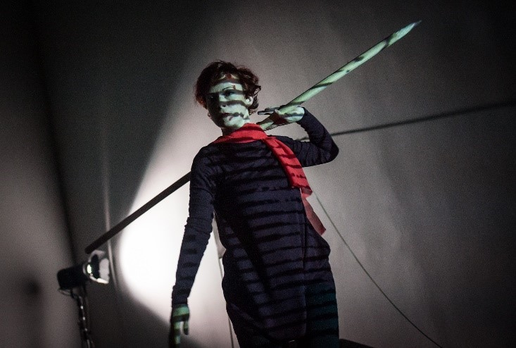
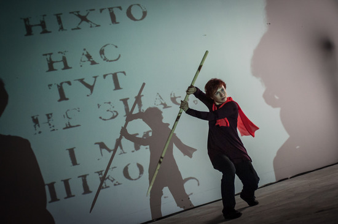
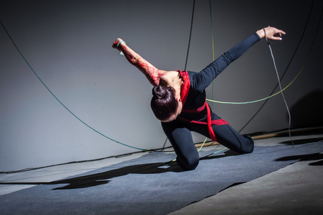
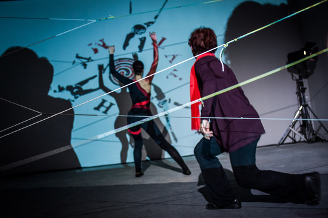
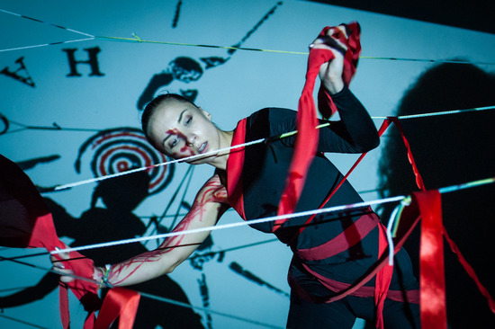
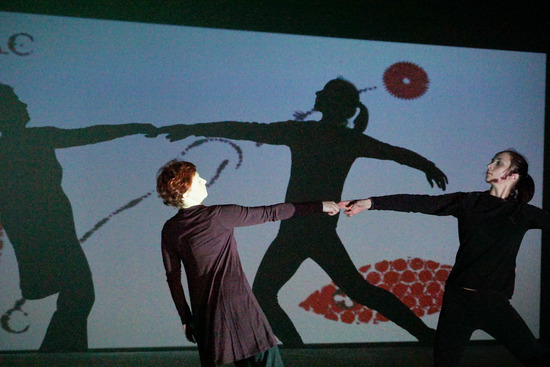
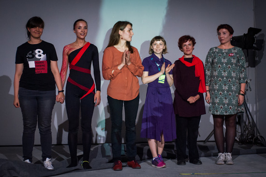

Tu, tam, gdzieś... (Ukraina 2019)
Performans w ramach programu performatywnego IX Międzynarodowego Festiwalu „Książkowy Arsenał”, Kijów, Ukraina na podstawie nowego zbioru wierszy Kateryny Kałytko „Nikt nas tu nie zna i my nie znamy nikogo”

Reżyserka - Svitlana Oleksyuk
Wykonawcy: Olha Kebas, Maria Koltunik
Akompaniament muzyczny - Alina Frolova
Autor animacji - Oleksiy Kravchenko
Wykonawcy: Olha Kebas, Maria Koltunik
Akompaniament muzyczny - Alina Frolova
Autor animacji - Oleksiy Kravchenko
Obelgi, porwane myśli, jasne obrazy. Kruchość i obcość, czerwień i czerń. Sugestia sensu, niepewna - raczej odmowa wyraźnej artykulacji, nielogiczna synteza. Tłumaczenie poezji Kateryny Kalytko na ruch ujawniło nam szczegółowość jej języka - a zanurzenie w nim pomogło stworzyć prostą i klarowną rozmowę. Jest w nim niewiele słów i wiele domysłów.
„Po prostu jedna osoba wybrała sobie inną za płótno”





